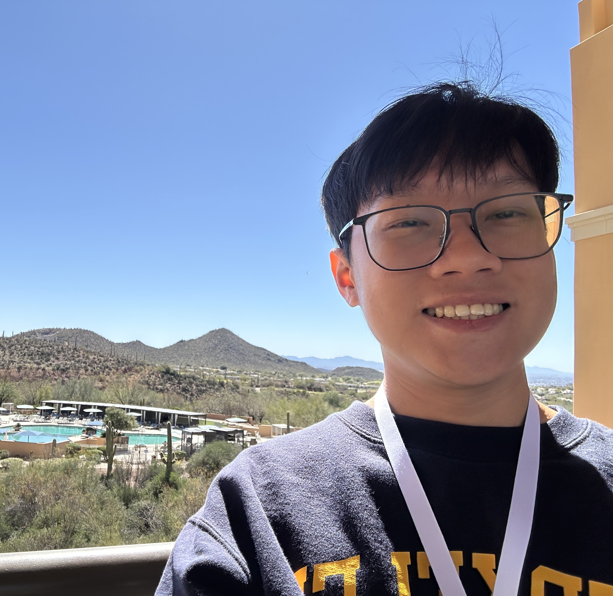
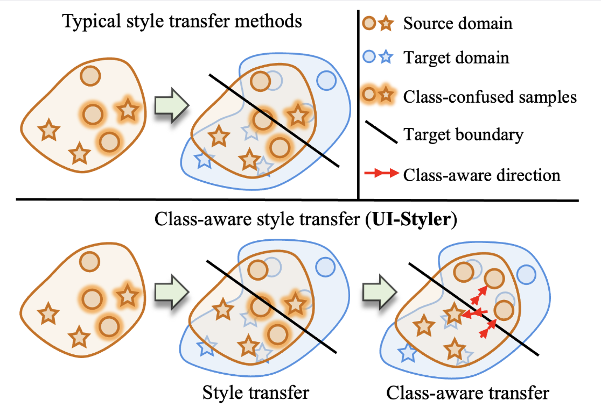
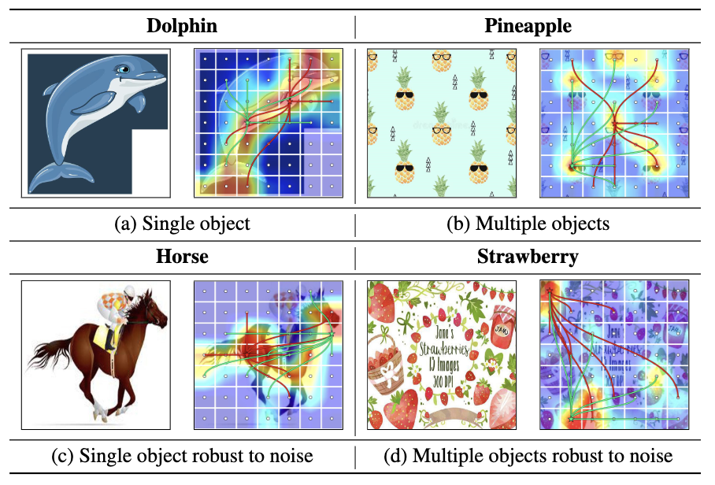
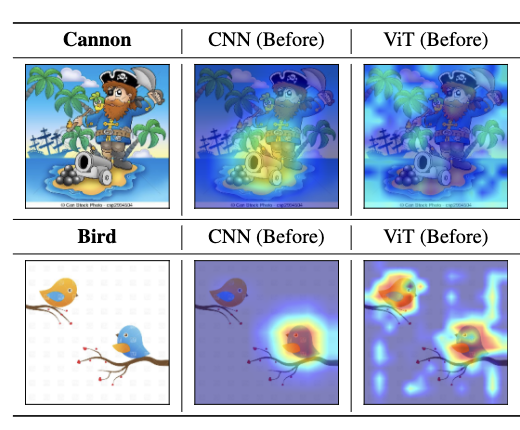

I am a Ph.D. Student in Computer Science at National University of Singapore (NUS), working with Prof. Lee Gim Hee.
Previously, I received Master's degree in Computer Science at National Yang Ming Chiao Tung University (NYCU), advised by Prof. Ching-Chun Huang.
Before that, I obtained Bachelor's degree at Ho Chi Minh City University of Technology and Education (HCMUTE), advised by Trung-Hieu Nguyen and Vu-Hoang Tran.
Research interests: Embodied AI, Robot Manipulation, Domain Adaptation.


